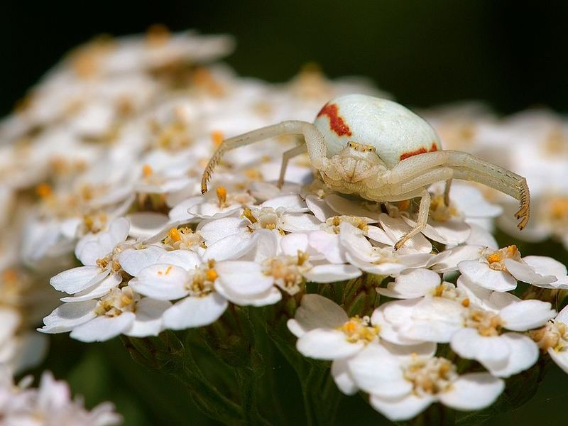

Veränderliche Krabbenspinne
Misumena vatia
Die Gelbe Krabbenspinne sitzt meist gut getarnt auf Wiesenblumen und erbeutet dort blütenbesuchende Insekten. Diese Spinne kann sich — gleich einem Chamäleon — farblich ihrer Umgebung anpassen.
Die Gelbe Krabbenspinne sitzt meist gut getarnt auf Wiesenblumen und erbeutet dort blütenbesuchende Insekten. Diese Spinne kann sich — gleich einem Chamäleon — farblich ihrer Umgebung anpassen.